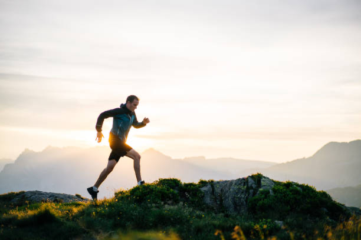
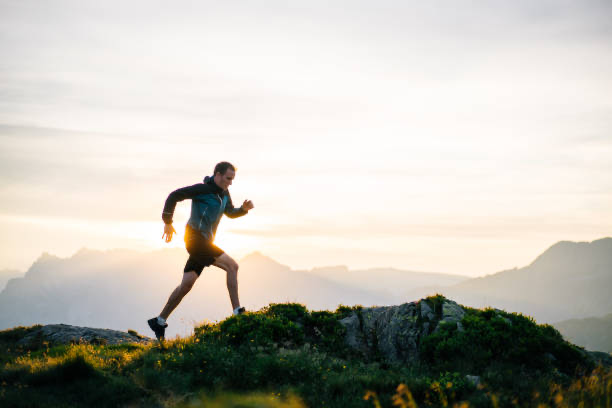
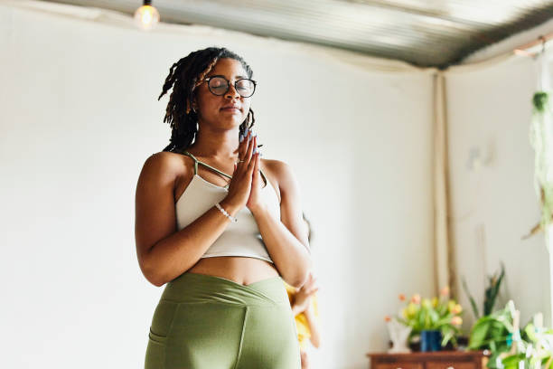
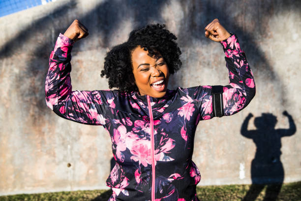
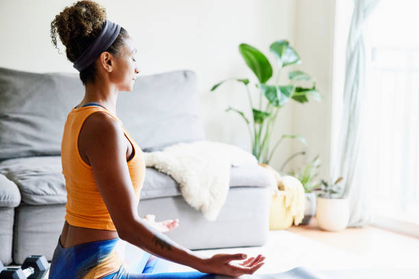

–>Posts
Physical Wellness
The pandemic has underscored the ways in which our physical bodies carry not just general stress, but traumatic stress. Increased fatigue, difficulty sleeping, or tension headaches and body aches are all common signs that we may be carrying traumatic adjustment stress or ongoing COVID-19 related stress. The diversity among us means that we may feel different things differently in our bodies than people we know.Self-Care for Physical Wellness
Consider new types of physical activities that you have never tried before, or maybe something that you have always wanted to try but just have not had the time. If you are a runner, maybe consider interspersing it with walking. If you are a walker, maybe consider listening to a meditation as you walk. If you do neither, consider incorporating gentle stretches while studying. Having positive and curious conversations with family and friends about their physical wellness may prompt new ways to consider strategies for ourselves. 

Spiritual Wellness
A year ago, religious/spiritual practice pivoted dramatically as spiritual and religious communities began to offer services like preaching, prayer, and meditation—even hospital bedside visits—virtually. Worshippers have mourned the loss of holy space and communal practices, especially during holy seasons like Passover, Easter, and Ramadan, and on other occasions when the community assembles in solidarity.
Self-Care for Spiritual Wellness
Explore creative ways to access spiritual/religious communities; engage in informal spirituality/religious discussion groups via Zoom; consult with spiritual/religious elders for advice and support for navigating during this time; consider ways that we can find spiritual community that transcends being physically present with others.Emotional Wellness
Paradoxically, our stress is helping us cope, bond together from a physical distance as best we can, and slow the spread of the virus. While uncomfortable, it can be a source of resilience, especially if managed well. At the same time, it's important to stay informed, but prevent inner or outer panic contagion and create periods when we can be screen-free and calm, engaging our attention in present-moment activities. 